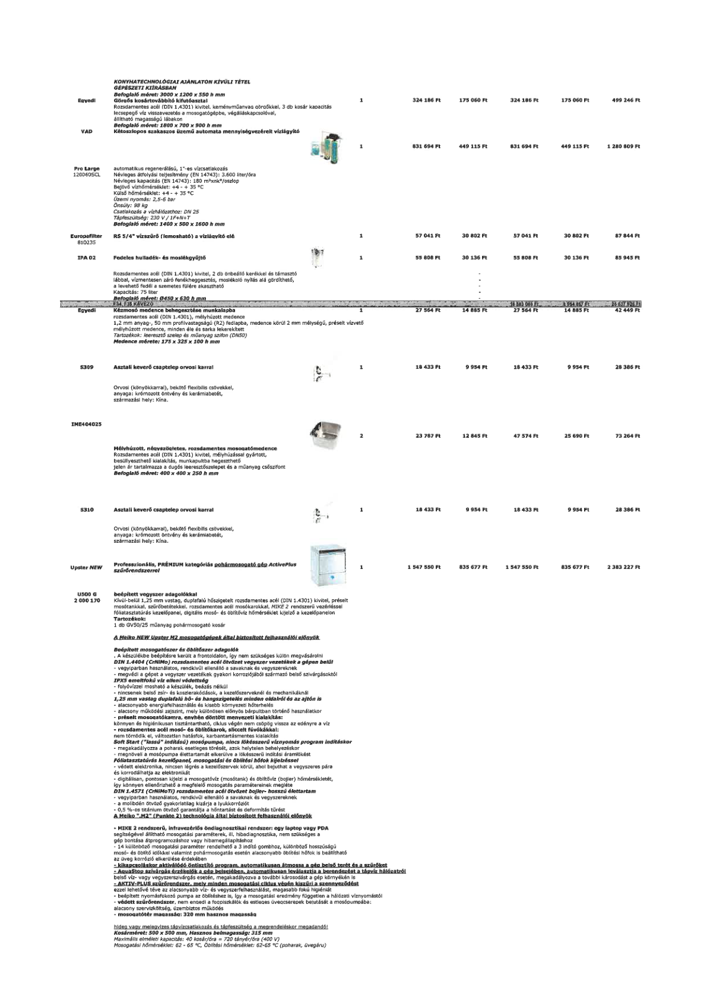

| Tétel | Menny. | Egys. | Anyag e.ár (net HUF) | Díj e.ár (net HUF) | Anyag összesen (net HUF) | Díj összesen (net HUF) | Anyag+Díj összesen (net HUF) |
|---|---|---|---|---|---|---|---|
| Egyedi Gőzölős kosártovábbító kifutóasztal | 1 | NaN | 324 186 | 175 060 | 324 186 | 175 060 | 499 246 |
| VAD Kétoszlopos szakaszos üzemű automata mennyiségvezérelt vízlágyító | 1 | NaN | 831 694 | 449 115 | 831 694 | 449 115 | 1 280 809 |
| Europafilter 810235 RS 5/4" vízszűrő (lemosható) a vízlágyító elé | 1 | NaN | 57 041 | 30 802 | 57 041 | 30 802 | 87 844 |
| IPA 02 Fedeles hulladék- és moslékgyűjtő | 1 | NaN | 55 808 | 30 136 | 55 808 | 30 136 | 85 945 |
| Egyedi Kézmosó medence behegesztése munkalapba | 1 | NaN | 27 564 | 14 885 | 27 564 | 14 885 | 42 449 |
| S309 Asztali keverő csaptelep orvosi karral | 1 | NaN | 18 433 | 9 954 | 18 433 | 9 954 | 28 386 |
| IME404025 Mélyhúzott, négyszögletes, rozsdamentes mosogatómedence | 2 | NaN | 23 787 | 12 845 | 47 574 | 25 690 | 73 264 |
| S310 Asztali keverő csaptelep orvosi karral | 1 | NaN | 18 433 | 9 954 | 18 433 | 9 954 | 28 386 |
| Upster NEW Professzionális, PRÉMIUM kategóriás pohármosogató gép ActivePlus szűrőrendszerrel | 1 | NaN | 1 547 550 | 835 677 | 1 547 550 | 835 677 | 2 383 227 |
